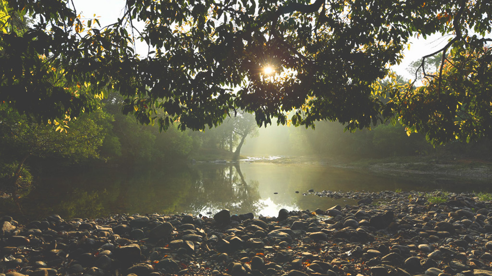

Aralam Wildlife Sanctuary

Nuzzled in the folds of the majestic Western Ghats in the Kannur district of Kerala lies a stretch of greenery that bursts with myriad forms of wildlife. With its varieties of bird species, unique types of trees, rare medicinal plants and animals, Aralam Wildlife Sanctuary is indeed a biodiversity haven. Go for a trek deep into the woods of Aralam and come back with sagas and snaps of vibrant flora and fauna. Patient observation fetches you some surprising sights that range from that of the rare Malabar Pied Hornbill to the tiny beauty, Scarlet Minivet. This bird watcher’s paradise will help you spot an array of beautiful birds including Mountain Pigeons, the Flame Throated Bulbul, Imperial Pigeons, Asian – Fairy Bluebirds, White-bellied Treepie, Indian Black-lored Tit, Heart-spotted Woodpecker, Barbets, Southern Hill Myna, Orioles and so forthAralam is a haven for butterflies as well and is home to around 250 varieties. Come to this place during late December- early February to watch the migration of these tiny little creatures of beauty – a sight to behold. Your journey through the woods will be punctuated by sudden fluttering of wings of the Giant Orange Dip, Common Albatross, Buddha Peacock Butterfly, Papilio Paris Butterfly or even the largest butterfly in South India, the Southern Birdwing. The animal species of Aralam includes Elephants, Tiger, Gaur, Malabar Giant Squirrel, Sambar, Barking deer, Nilgiri Langur, and the Hanuman Langur. Besides these, Aralam is the best place in which to study about the different kinds of frogs and the reptile family.